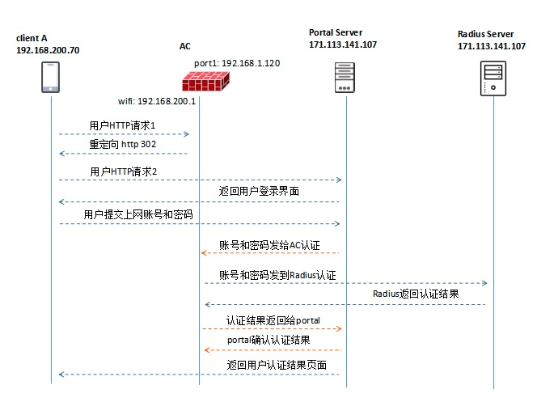

介绍
Portal认证通常也称为Web认证，一般将Portal认证网站称为门户网站。用户上网时，必须在门户网站进行认证，只有认证通过后才可以使用网络资源。
用户可以主动访问已知的Portal认证网站，输入用户名和密码进行认证，这种开始Portal认证的方式称作主动认证。反之，如果用户试图通过HTTP访问其他外网，将被强制访问Portal认证网站，从而开始Portal认证过程，这种方式称作强制认证。
Portal认证特点：
不需要安装客户端，直接使用Web页面认证，使用方便，减少客户端的维护工作量。
便于运营，可以在Portal页面上开展业务拓展，如广告推送、责任公告、企业宣传等。
技术成熟，被广泛应用于运营商、连锁快餐、酒店、学校等网络。
应用场景：
访客接入
低成本混合接入：Portal + MAC旁路。

1）用户访问任意网站，经过AC判断该用户未完成认证，发送HTTP 302请求到用户端，要求重定向到Portal Server的URL；
2）用户收到重定向报文，再次请求portal server的URL；
3）Portal Server推送统一的URL认证页面；
4）用户填入用户名、密码，提交页面，向Portal Server发起连接请求；
5）Portal Server向AC发起认证请求，请求中携带用户名和密码（已经加密）；
6）而后AC进行RADIUS认证，发送Access-Request请求；
7）AC接收Radius响应Access-Accept（Access-Reject等）消息；
8）AC向Portal Server发送认证结果；
9) Portal Server回应确认收到认证结果的报文。
10）Portal Server推送认证结果给用户。
docker run -p 3306:3306 --name mysql -e MYSQL_ROOT_PASSWORD=208512512 -d mysql:5.7
yum -y install freeradius freeradius-utils freeradius-mysql
pip install mycli
使用 mycli代替mysql
1. create database radius default character set utf8 collate utf8_general_ci;
2. grant all on radius.* to 'radius'@'%' identified by '123456';
3. grant all on radius.* to 'radius'@'localhost' identified by '123456';
4. flush privileges;
use radius
source /etc/raddb/mods-config/sql/main/mysql/schema.sql
上面的指令，共导入了7个表，分别是： radcheck 用户检查信息表 radreply 用户回复信息表 radgroupcheck 用户组检查信息表 radgroupreply 用户组检查信息表 radusergroup 用户和组关系表 radacct 计费情况表 radpostauth 认证后处理信息，可以包括认证请求成功和拒绝的记录。
建立组信息：（在此新建组名称为user）
insert into radgroupreply (groupname,attribute,op,value) values ("user","Auth-Type",":=","Local");
insert into radgroupreply (groupname,attribute,op,value) values ("user","Service-Type",":=","Framed-User");
insert into radgroupreply (groupname,attribute,op,value) values ("user","Framed-IP-Address", ":=","255.255.255.255");
insert into radgroupreply (groupname,attribute,op,value) values ("user","Framed-IP-Netmask", ":=","255.255.255.0");
建立用户信息：（在此新建用户名为test，密码为testpwd）
insert into radcheck (username,attribute,op,value) values ("test", "Cleartext-Password",":=","testpwd");
将用户加入组中：
insert into radusergroup (username,groupname) values ("test","user");
修改FreeRadius中的mysql认证配置
cd /etc/raddb/mods-enabled
ln -s ../mods-available/sql
chgrp -h radiusd /etc/raddb/mods-enabled/sql
vim /etc/raddb/mods-available/sql
找到driver = “rlm_sql_null”这一行，修改为driver = “rlm_sql_mysql”
vim /etc/raddb/radiusd.conf
auth = yes
auth_badpass = yes
auth_goodpass = yes
vim /etc/raddb/sites-available/default
取消sql的注释，将-sql的-去掉
vim /etc/raddb/mods-available/sql
修改dialect = “sqlite” 为 dialect = “mysql”
server = "10.10.128.235"
port = 3306
login = "radius"
password = "123456"
radius_db = "radius"
read_clients=yes
取消注释
Unable to check file "/etc/raddb/certs/server.pem": No such file or directory
rlm_eap_tls: Failed initializing SSL context
rlm_eap (EAP): Failed to initialise rlm_eap_tls
/etc/raddb/mods-enabled/eap[14]: Instantiation failed for module "eap"
rlm_eap: SSL error error:0200100D:system library:fopen:Permission denied
rlm_eap_tls: Error reading certificate file /etc/raddb/certs/server.pem
rlm_eap: Failed to initialize type tls
/etc/raddb/eap.conf[17]: Instantiation failed for module "eap"
下面一定要操作，不然会报证书错误，读不到或者权限错误(上面的报错)
# cd /etc/raddb/certs
# ./bootstrap
# chown radiusd:radiusd server.pem ca.pem dh
测试radius是否运行正常
radiusd -X
启动radius和设置为开机启动
systemctl start radiusd.service
systemctl enable radiusd.service
正常启动
radtest test testpwd localhost 1812 testing123
Sent Access-Request Id 222 from 0.0.0.0:19958 to 127.0.0.1:1812 length 74
User-Name = "test"
User-Password = "testpwd"
NAS-IP-Address = 10.10.128.235
NAS-Port = 1812
Message-Authenticator = 0x00
Cleartext-Password = "testpwd"
Received Access-Accept Id 222 from 127.0.0.1:1812 to 0.0.0.0:0 length 44
Service-Type = Framed-User
Service-Type = Framed-User
Framed-IP-Address = 255.255.255.255
Framed-IP-Netmask = 255.255.255.0
添加客户端连接设置
编辑/etc/raddb/clients.conf文件，为允许连接的客户端设置相应的共享秘钥
例一：本地localhost接入(一般用于测试)，共享秘钥为demoradiussecret:
client localhost {
ipaddr = 127.0.0.1
proto = *
secret = demo_radius_secret
}
\# IPv6 Client
client localhost_ipv6 {
ipv6addr = ::1
secret = demo_radius_secret
}
例二：允许内网192.168.110网段连接该radius，共享秘钥为demoradiussecret: client my_lan {
ipaddr = 192.168.110.0/24
secret = demo_radius_secret
require_message_authenticator = no
}
例三：允许所有客户端连接：
client all_client {
ipaddr = 0.0.0.0/0
secret = demo_radius_secret
require_message_authenticator = no
}
启动服务
\# systemctl start radiusd.service
\# systemctl status radiusd.service